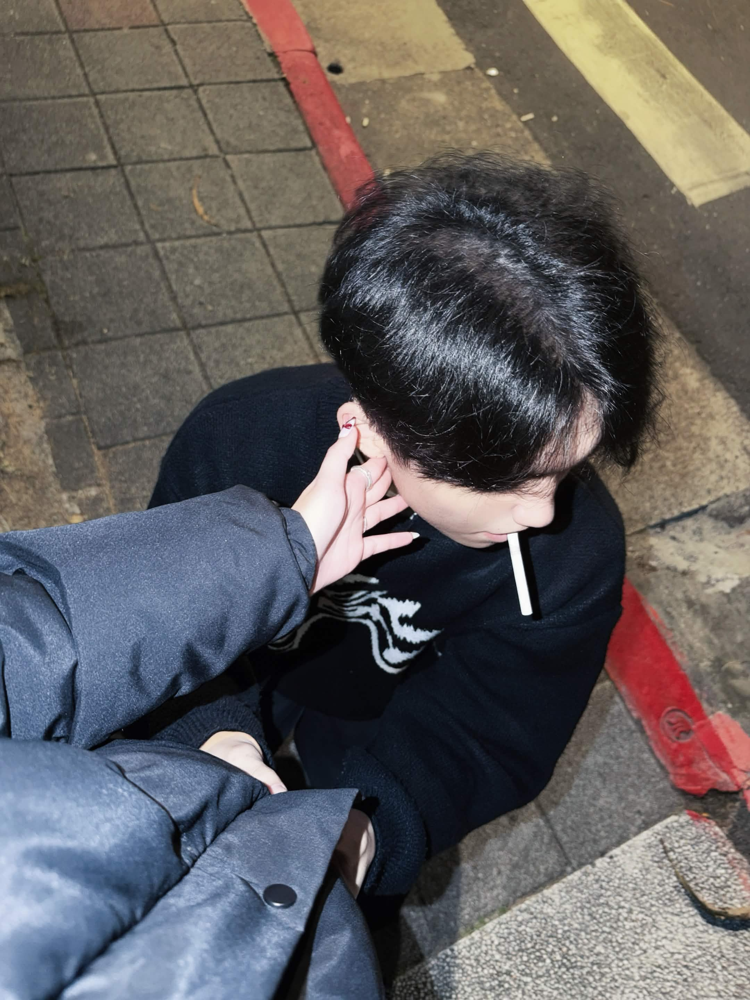
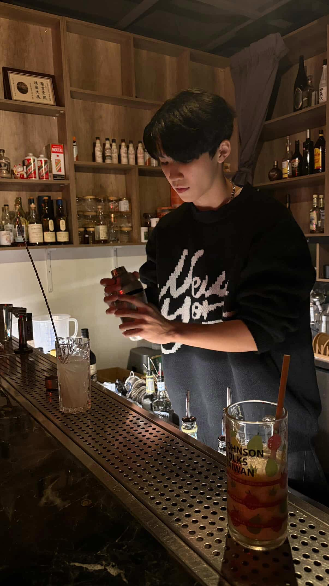
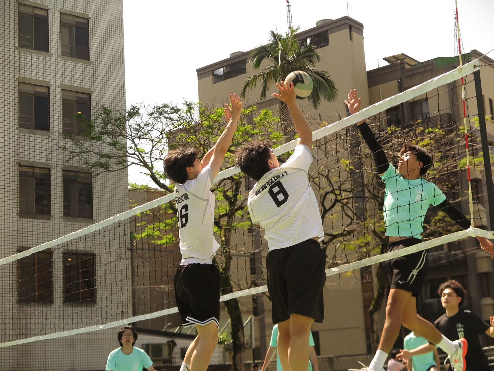
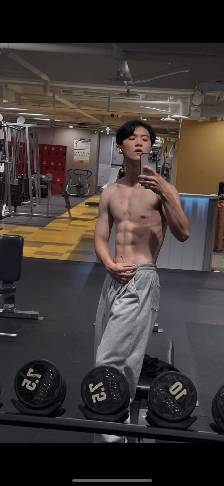

世新大學 資訊傳播學系 | 追求質感與自我提升的實踐者
我是個生活簡單但有認真在變好的人。平常熱愛健身，目前的目標是把自己練成乾淨、有線條的身材，雖然過程不容易，但我依然在持續努力中。
我的個性算是外冷內熱，熟了之後其實蠻好聊的。在人際交往中，我會認真傾聽別人講話，也蠻在意細節。比起喧鬧、流於形式的社交，我更喜歡有質感、有來有往的深度交流，在彼此的互動中獲得真實的共鳴與成長。
反思： 進入資傳系是我探索數位內容與資訊科技融合的新起點。我期許自己能在這裡將過去在運動中培養的專注力，轉化為對資訊架構與傳播媒介的敏感度，學習如何用更有質感的方式傳遞訊息。
反思： 高中的社會組訓練，充實了我的社會科學基礎與人文關懷。在緊湊的升學壓力與球隊訓練中，我學會了時間管理與多工處理，這段跨領域的平衡經驗讓我變得更加強韌。
反思： 擔任快攻手時，常常球還沒完全到位，人就已經在空中了。這讓我深刻體會到「信任」與「觀察」的重要性——必須學會看舉球員的手與球的軌跡，並無條件信任舉球員會把球塞給我。這是排球裡最考驗節奏同步的地方，也讓我在團隊合作中，學會了如何高度配合與絕對信任。
反思： 這段經歷讓我明白「萬丈高樓平地起」的道理。從最基礎、最辛苦的洗杯子做起，一邊做一邊細心觀察、偷學技術。靠著背誦無數的配方與不斷重複的練習，才慢慢上手調酒。這段兼職不僅磨練了我的耐性，更培養了我對細節的極致追求與質感服務的眼界。

記錄擔任調酒師學徒期間，從背誦配方到揉合不同基酒風味的成果。展現對冰塊、比例與攪拌節奏的精準掌控，將調酒工藝化為具視覺與味覺質感的藝術。

集結在磐石高中排球隊擔任快攻手的賽事影像與戰術跑動記錄。呈現與舉球員之間超越言語的完美默契，以及在空中零點幾秒內的果斷重扣。

日常為了維持乾淨線條身材的健身紀錄。展現對身體核心控制力、專注力與抗壓力磨練的自我實踐。